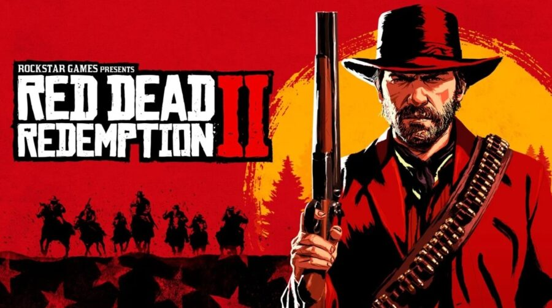

Top melhores Jogos Da Atualidade
-
The Witcher 3: Wild Hunt: um RPG imersivo que cativa os jogadores com sua narrativa rica e seu vasto mundo aberto, repleto de desafios emocionantes.

-
The Legend of Zelda: Breath of the Wild: Um jogo de aventura que redefine a série Zelda, com um vasto mundo aberto cheio de segredos para descobrir, quebra-cabeças engenhosos e uma liberdade de exploração sem precedentes.

-
Red Dead Redemption 2: Uma épica história de cowboy ambientada no Velho Oeste americano, com uma jogabilidade imersiva, gráficos deslumbrantes e uma narrativa cativante sobre honra, lealdade e redenção.
 -
Hades: Um jogo indie de ação e roguelike que combina combate rápido e emocionante com uma narrativa envolvente, tudo ambientado no submundo da mitologia grega.

-
Ghost of Tsushima: Um jogo de ação e aventura que se passa no Japão feudal, oferecendo combate fluido, paisagens deslumbrantes e uma história emocionante sobre um samurai lutando para proteger sua terra natal da invasão mongol.